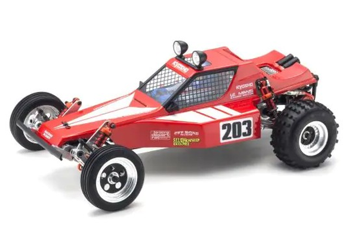

京商 トマホーク

引用元画像：京商公式サイト
📋 基本情報
| メーカー | 京商（Kyosho） |
|---|---|
| 機種名 | トマホーク（Tomahawk） |
| シャーシ略称 | トマホーク |
| 型番 | 30615C（復刻版） |
| 発売時期 | 初代：1983年 / 復刻版：2023年9月 |
| 価格 | 復刻版：¥46,200（税込）/ 初代：¥19,800（当時価格） |
| 生産状況 | 現行販売中（復刻版） |
| カテゴリー | ラジコンカー（1/10スケール 電動RCカー） |
| サブカテゴリー | レーシングバギー（2WD オフロード） |
| シリーズ | ビンテージシリーズ 第3弾 |
📏 シャーシスペック
| 全長 | 380mm |
|---|---|
| 全幅 | 236mm |
| 全高 | 145mm |
| ホイールベース | 263mm |
| トレッド | フロント198mm / リヤ195mm |
| タイヤ幅/径 | フロントΦ75×20mm / リヤΦ85×41mm |
| フレーム | 復刻版：A6061T6アルミ製ラダーフレーム（軽量・高剛性） 初代：バスタブシャシー（樹脂製メカボックス） |
| 全備重量 | 復刻版：約905g（R/Cメカ・バッテリー無し） 初代：約1,450g（全装備重量） |
| 搭載可能バッテリーサイズ | L 140mm × W 52mm × H 25mm |
⚙️ 駆動系
| 駆動方式 | リアドライブ2WD |
|---|---|
| デフギヤ | ギヤデフ内蔵（ボールデフへの換装可能 - オプション） |
| ギヤ比 | H仕様 6.9:1 / L仕様 8.3:1（2種類から選択可能） |
| ギヤピッチ | 復刻版：48ピッチ（高効率・低走行音） |
| トランスミッション | 2ピースアルミダイキャスト製ギヤボックス |
| スリッパークラッチ | 復刻版：標準装備（ギヤ保護、調整可能） |
| モーター | 540クラス（別売） 推奨：27～30ターン |
🔧 サスペンション
| 形式 | 4輪ダブルウィッシュボーン独立懸架 |
|---|---|
| サスアーム | 復刻版：A6061T6鍛造アルミ製（高剛性・高強度・高耐久性） |
| ダンパー | オイルダンパー×4本（組み立て済み） |
| ステアリング | ラック&ピニオン式 |
💡 特徴
ビンテージシリーズ第3弾 - スコーピオンベースの純粋レーシングマシン
- 1983年デビューのトマホークを現代技術で復刻
- スコーピオンの足周りをベースにメカレイアウトを大幅変更
- 樹脂製メカボックス（バスタブシャシー）からダブルデッキメカプレートへ変更
- 初代比で約545g軽量化（1,450g → 905g）
復刻版の進化ポイント（2023年モデル）
- 2014年スコーピオンの金属パーツを採用（A6061T6アルミシャシー、鍛造サスアーム）
- ダブルデッキ構造でスパルタンなレーシングスタイルを維持
- ラジオボックスを撤去し80g軽量化
- バッテリーをサイドマウント配置で最適な重量配分
- FRP製アッパーデッキステーで高剛性化
- サーボマウントはネジ固定式（初代：両面テープ＋ナイロンバンド）
ボディ＆デザイン
- オリジナル金型から製作したポリカーボネート製ボディ
- ドライバーフィギュア＆ダストカバー付属
- サイドウインドウメッシュをデカールで再現
- ルーフライトバケット＆ライトガード標準装備（初代未搭載）
- ダイカット済みデカールで簡単仕上げ
- ブリスターパッケージで初代の雰囲気を再現
初代との違い（1983年オリジナル vs 2023年復刻版）
- シャシー：バスタブシャシー → A6061T6アルミラダーフレーム
- 重量：1,450g → 905g（545g軽量化）
- サスアーム：樹脂製 → A6061T6鍛造アルミ製
- サーボマウント：両面テープ＋ナイロンバンド → ネジ固定式
- スピードコントローラー：機械式（メッキ仕上げレプリカ付属） → ESC対応
- ライトバケット：無し → 標準装備
🔧 ぽすとそに工房での修理実績
修理難易度
★☆☆☆☆（非常に簡単）
パーツも豊富で、修理の方法も分かりやすく設計されています。
よくある故障・注意点
- 復刻版は現代パワーソース対応のためトラブルは少ない
- オイルダンパーのメンテナンスが重要
- ダブルデッキ構造のため剛性が高い
- スリッパークラッチの調整が必要
修理のポイント
- ギヤボックスは組み立て済みだが、定期的なグリスアップ推奨
- オイルダンパーにオイルを充填する必要あり（キット同梱）
- A6061T6アルミパーツは強度が高いが過度な衝撃に注意
- スコーピオン用オプションパーツが使用可能
その他の特徴
- ビンテージシリーズならではの組み立てやすさ
- 皿穴加工でフラットサーフェス化
- ヘックスタイプビス採用で確実な締め付け
- スコーピオン比で20mm狭いトレッド＋10mm短いホイールベース